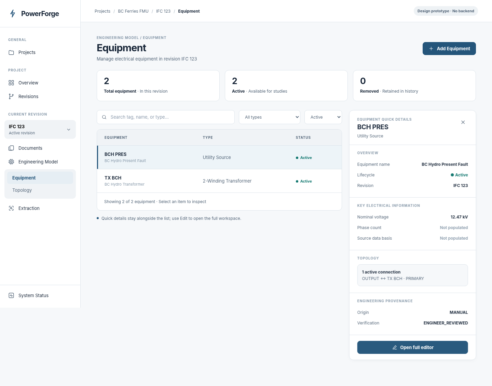
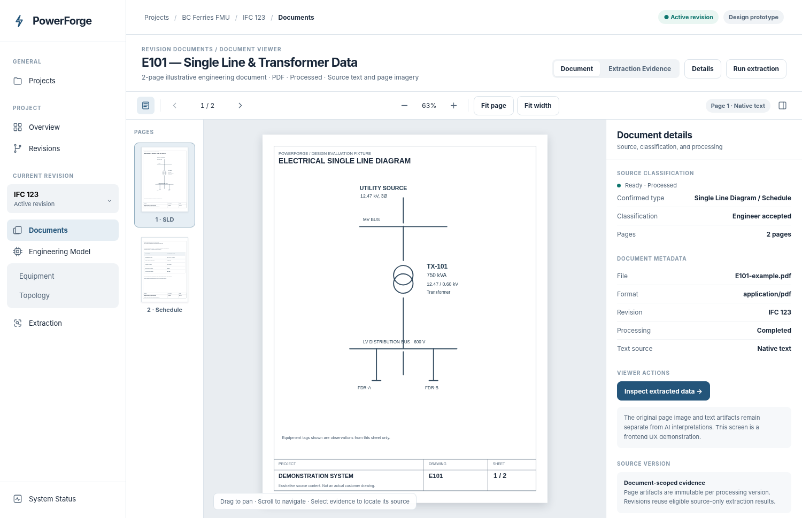
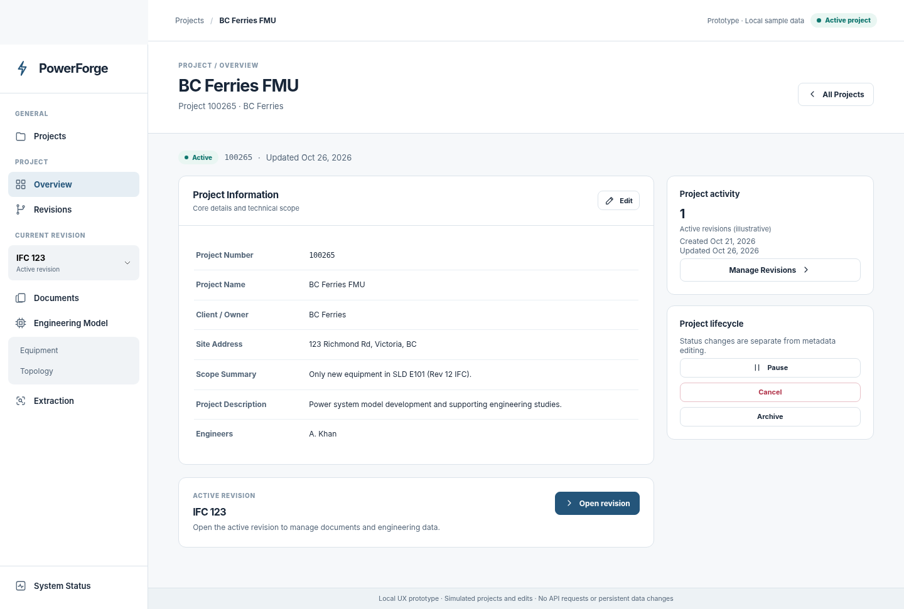
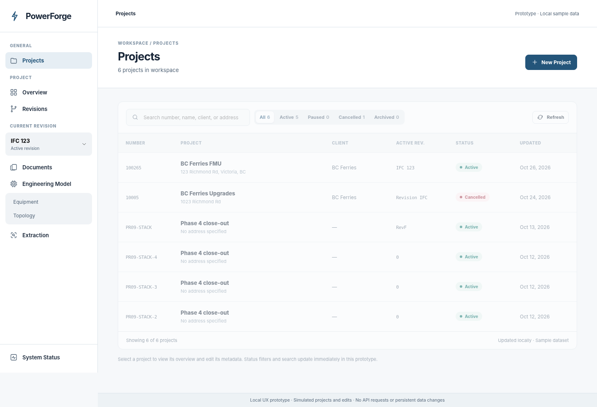
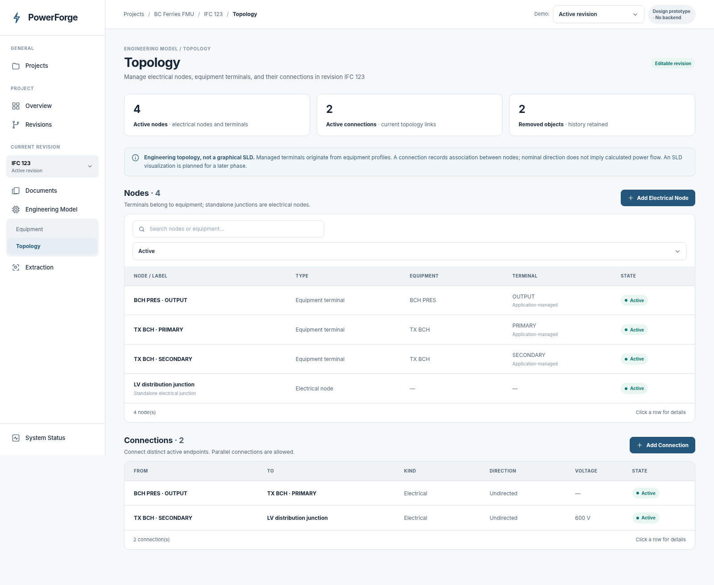
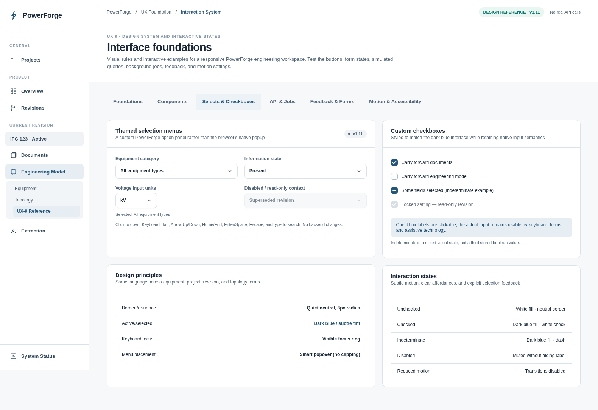

PROTOTYPE 01
Equipment inspection & editing
Nonmodal quick details, equipment selection, a full editor, compact attribute rows, and General / Attributes / Terminals navigation.
Six self-contained, interactive HTML prototypes based on the PowerForge Figma app shell. Open each directly in a desktop browser—no installation or backend required.

Nonmodal quick details, equipment selection, a full editor, compact attribute rows, and General / Attributes / Terminals navigation.

Page thumbnails, drag-to-pan, zoom, source inspection, extracted candidates, and direct evidence highlights. Tagless source values remain separate.

Project Overview, searchable Revisions, Revision Overview, create/edit revision forms, manual engineering metadata, a revision switcher, and simulated activation.

Search and filter projects, create a project with an optional initial revision, edit project information, and inspect controlled lifecycle actions.

Node and connection registers, contextual inspector, editable node labels and connection fields, conservative lifecycle handling, and read-only revision demonstration.

Custom dropdown menus and checkboxes, semantic colors and typography, reusable components, skeletons, background refetch, error/retry, progress, dirty drafts, toasts and reduced-motion examples.